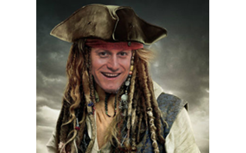
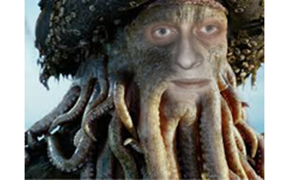

Пират уни

Преди много, много време се носело предание за мистичен пиратско-програмистичен унуверситет, който всеки месец имал прием за млади пиратчета. Трейнърите-пирати били големи логически разбойници, които са част от Пиратско-програмисткото братство. Университета е изграден за да покаже че пиратсвото е лесно достъпно. Според мълвата екипажът му бил само от млади пирати, но изключение прави Светлин Спароу, който незнайно колко години кръстосва логическите морета, тласкан от злокобния вятър на успеха. Но се оказва, че и младите пирати са доста премятани между вълните на пиратсването с Visual Studio! Легендите разказват, че e възможно да се завърши Пиратския университет при определен брой плачкосани кредити. За съжаление на капитан Светлин Спароу, не всички ще плячкосат толкова. Преди години той(Светлин Спароу) е сключил сделка с редица пиратски братсва, които постоянно си тъсят пирати, но за да я изпълни, трябва да се положи много труд по време на пиратското обучение и при пиратсване на изпит, много невинни души умират. Но Светлин не иска да се предаде без битка и е принуден да търси помощ и от гости Трейнъри-Пирати. Тежки времена настъпват за пиратчетата след приемането им. Източноиндийското часово време им е до болка познато и са синоними за "Летящия холандец". Но за приетите има и добро време, когато се налага екипно плячкосване и е необходимо да се сплотят и да водят борба на живот и смърт при защитата на плячкосаното богаство. При защита обикновенно е свикан Съветът на братството на пиратските Трейнъри.
About Grayscale
Grayscale is a free Bootstrap 3 theme created by Start Bootstrap. It can be yours right now, simply download the template on the preview page. The theme is open source, and you can use it for any purpose, personal or commercial.
This theme features stock photos by Gratisography along with a custom Google Maps skin courtesy of Snazzy Maps.
Grayscale includes full HTML, CSS, and custom JavaScript files along with LESS files for easy customization.
Кратка учебна програма
Учебният план на ПиратУни е комбинация от курсове по пиратсване и технологични пиратски похвати, изцяло насочени към усвояването на фундаментални пиратски познания, развиващи логическото и алгоритмично пиратско мислене, както и придобиването на практически пиратски умения за работа с най-съвременните пиратски технологии. Формите на обучение в СофтУни са присъствено пиратсване и пиратсване от разстояние. Занятията се провеждат предимно вечер, така че посещението им е удобно и за ковачи, перачи, летописци и хаймани, които да могат да се обучават в присъствено пиратсване.
- Основни пиратски похвати (Basic pirating);
- Фундаментални пиратски похвати (Fundamental pirating);
- Напреднали пиратски техники (Front-End Pirating) и (Back-End Pirating);
Трейнъри Пирати
- Светлин Спароу

Капитан Светлин Спароу може би e най-свирепият пират по този вид академии и умиверситети. "ПиратУни" без съмнение е до моментния най-голям успех на Светльо. Плюс трите безценни предмета, с които никога не се разделя-компютър, телефон и МЕРЦЕДЕС. Предпочита да е сред простосмърните пиратчета (предимно с доста десетилетия по-млади от него). Той не обича нищо повече от алгоритмите и не се страхува да използва странни думи, които той е измислил. Култовият софтуерен пират обича да флиртува с логиката и през живота си е имал не един сложен логически проблем. Флиртовете обаче са нещо съвсем различно от любовта, която изпитва към Обучаването на млади пирати и превръщането им в Софтуерни тайфуни.
- Данчо Джоунс

Данчо Джоунс е капитан в Софтуерната пиратска академия. Той има задължение да пренася душите на все още неуките пиратчета към дълбокия свят на ПиратУни. Събира душите им и ги прави програмисти за 100 години. Влюбен е в съзвездия, непрестанно търси там Калипсо. След като предаде учебния материал, преди изпит на пиратчетата, изоставя задръжките си и се превръща в огромен интелектуален кракен, с невъобразимо тежки изпитни проблеми. Той смята, че хората трябва да пишат HQC, особено това се вижда в фразата му: „ЛАЙНЯН КОД". Данчо Джоунс е мъдър, не толерира излизането в почивка, която не и е дошло времето. Той постоянно изпълнява свойте обещания. Независимо, че той се прави на строг, изпитва привързаност и любов. Данчо Джоунс притежава известни свръхестествени способности - памет и интелигентност. Той може да преминава през различни препядствия.
- Ачо Търнър
Ачо Търнър е млад пират-програмист, влюбен в обучението на пиратчета. Единствената му надежда да не е разочарован от любовта си е, младите пиратчета да грабят възможно най много.
- Ник Гипс
- Богомил Барбоса
Богомил Барбоса постоянно предлага по неповторим начин пътищата за пленяване на златното съкровище. Обяснява с лекота за плячкосването, също така показва и пиратски хватки. За жалост, то не е толкова достъпно колкото се иска на пиратчетата. Обикновенно при плячкосване на съкровището на изпит, всички се превръщат в зомбита, които през по-голямата част от времето имат човешки облик, но когато ги огрее лунна светлина може би се превръщат в ужасяващи създания. Те (пиратчетата) намерили как да плячкосват с пищови, но Пиратите-Трейнъри ги хващали и им давали отрицателни резултати.
- Алекс Суон
Алекс Суон е чаровна и смела млада жена. Тя обикновенно е отвлечена от въпросчета на пиратчетата от ПиратУни, заради това е непрестанно заета до припадък. Тя може понякога може да се представя и за Алекс Търнър, което може да доведе до проливане на кръв!
- Наско Черната брада
Атанас Тийч, известен като Наско Черната брада (на английски съответно Blackbeard). Наско е млад Трейнър-пират с доста зловеща слава, действал в морето на 'C' и преподавал OOP. Други източници посочват че той преподава и Database Applications. Той е жертвоготовен и винаги отдаден на пиратчетата.